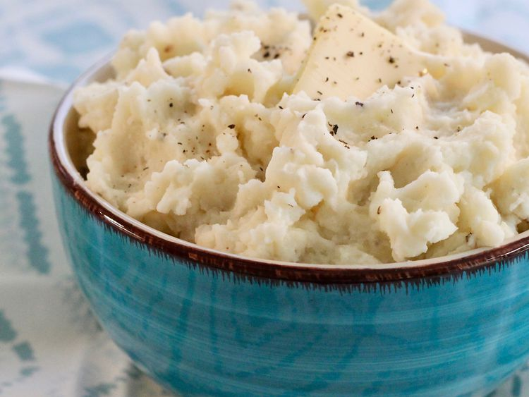

Old School Mashed Potatoes
Disclaimer this webpage is a demonstration, recipe was taken from: Esmee Williams

Description
This mashed potato recipe is perfect if you're looking for good, old-fashioned mashed potatoes.
Made with just potatoes, milk, butter, and optional garlic, this go-to recipe makes a classic holiday dish.
Learn how to make mashed potatoes that come out smooth, creamy, and delicious every time! Serve with gravy or extra butter on top.
Ingredients
- 2 pounds baking potatoes, peeled and quartered
- 3 cloves garlic, peeled, or to taste (Optional)
- 1 cup milk
- 2 tablespoons butter
- salt and ground black pepper to taste
Steps
- Gather all ingredients
- Bring a large pot of salted water to a boil.
Add potatoes and garlic, lower heat to medium,
and simmer until potatoes are tender, 15 to 20 minutes.
- When the potatoes are almost finished, heat milk and butter
in a small saucepan over low heat until butter is melted.
- Drain potatoes and return to the pot. Slowly add warm milk mixture, blending it in with a potato masher
or electric mixer until potatoes are smooth and creamy.
- Season with salt and pepper. Serve and enjoy!